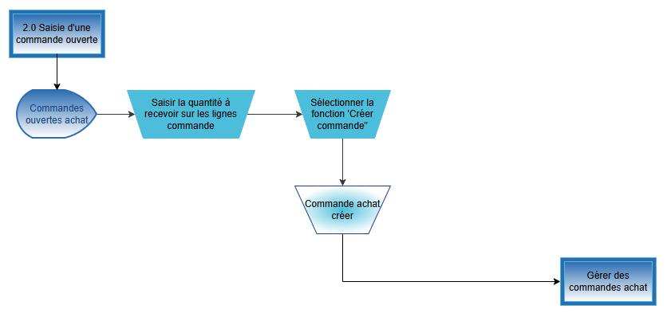

Fiche d'Aide à la Décision
FAD
 -
-
DOCUMENT D’ANALYSE FONCTIONNEL
-
FUNCTIONAL ANALYSIS DOCUMENT
Processus Achat
Microsoft Business Central

- ANAL
Sommaire
4. Traitement d‘une livraison directe 6
5. Saisie d’une demande de prix 7
6. Saisie d’une commande cadre 8
7. Saisie d’une commande d‘achat 10
8. Saisie d’un retour d’une commande achat 12
11. Annexe 1 : Liste d‘écarts 16
Ce document liste l’analyse fonctionnel sur les processus métier du client concernant le domaine des achats. Les principaux objectifs de l’analyse fonctionnel sont :
- Visiter les sites clients comme les usines, entrepôts et/ou bureaux
- Conduire des ateliers orientés processus.
- Ne pas rentrer en profondeur sur les fonctionnalités de l’ERP ni faire de démonstrations
- Comprendre la façon de travailler actuelle, les points faibles et les attentes globales et futures
- Identifier les écarts critiques et les interfaces qui peuvent avoir un impact sur le projet
- Identifier les volumes des référentiels et données transactionnelles
- Confirmer le périmètre fonctionnel, technique, géographique et organisationnel du projet
- Identifier un jeu de donnée nécessaire pour l’ERP pour mieux préparer les ateliers de démonstration.
Ce document a été préparé sur la base d‘atelier(s) réalisés avec les membres de l'équipe de projet suivants :
Atelier | Date | Lieu | Almakom | Client |
1er atelier | … | … | Nom et Prénom | Nom et Prénom |
2ème atelier | … | … | Nom et Prénom | Nom et Prénom |
Versions du document
Version | Date | Description | Ecrit par | Approuvé par |
Draft | JJ/MM/AAAA | Draft | Nom et Prénom | Nom et prénom |
… | JJ/MM/AAAA | … | … | … |
Membre de l‘équipe | Fonction | |
Nom et Prénom | … | … |
Nom et Prénom | … | … |
Les processus standards ERP qui font partie des ateliers d’analyse sur les achats sont :

3 Planification
3.1. Contexte et Hypothèses
[INFORMATION MANQUANTE]
Les hypothèses qui peuvent avoir un impact sur le projet doivent être indiquées.
3.2. Schéma des processus ERP : Planification 1.0

3.3. Principales règles de gestion
[INFORMATION MANQUANTE]
3.4. Documents et statistiques
[INFORMATION MANQUANTE]
3.5. Volume des données
[INFORMATION MANQUANTE]
3.6. Écarts critiques et interfaces
[INFORMATION MANQUANTE]
Ces écarts et interfaces doivent être initialisés dans la liste des écarts délivrée qui doit être finie à la fin de la phase d’Analyse.
4 Traitement d‘une livraison directe
4.1. Contexte et Hypothèses
**Contexte et hypothèses du processus de traitement d'une livraison directe**
**Situation actuelle :**
Le processus de traitement d'une livraison directe est actuellement manuel et nécessite une réception physique des colis, suivie d'un processus de "incoming" pour contrôler et réceptionner la livraison. Les instructions d'incoming sont données par le chef de projet, et les certificats sont gérés par la Qualité Contrôle. Les petites commandes nécessitent une chaîne d'approbation, avec un seuil dépendant de la personne qui passe la commande ou du risque sur la commande.
**Points critiques :**
* La difficulté de savoir où se trouve le colis physique
* Le processus de réception à revoir
* La gestion des certificats par la Qualité Contrôle
* La nécessité d'avoir les certificats pour toutes les pièces, ce qui dépend du projet
* La chaîne d'approbation pour les petites commandes
* La gestion du multi-sourcing, y compris la référence fournisseur
* La catégorisation possible des fournisseurs
**Attentes client :**
* Un processus de traitement d'une livraison directe automatisé et efficace
* Une gestion des certificats simplifiée
* Une chaîne d'approbation claire et transparente pour les petites commandes
* Une gestion du multi-sourcing optimisée
* Une catégorisation possible des fournisseurs
**Hypothèses :**
* La nécessité d'avoir les certificats pour toutes les pièces, ce qui dépend du projet
* La possibilité de trouver une source pour la catégorisation des fournisseurs (via Catya?)
* La nécessité de paramétrer les fournisseurs préférés
* La possibilité de rentrer les offres fournisseurs et de les lier aux projets
**Conclusion :**
Le processus de traitement d'une livraison directe actuel nécessite une révision pour améliorer l'efficacité et la transparence. Les hypothèses énoncées ci-dessus doivent être prises en compte pour développer un processus automatisé et efficace.
Les hypothèses qui peuvent avoir un impact sur le projet doivent être indiquées.
4.2. Schéma des processus ERP : Traitement d’une livraison directe 2.0

4.3. Principales règles de gestion
[INFORMATION MANQUANTE]
4.4. Documents et statistiques
[INFORMATION MANQUANTE]
4.5. Volume des données
[INFORMATION MANQUANTE]
4.6. Écarts critiques et interfaces
[INFORMATION MANQUANTE]
Ces écarts et interfaces doivent être initialisés dans la liste des écarts délivrée qui doit être finie à la fin de la phase d’Analyse.
5.1. Contexte et Hypothèses
**Processus de saisie des demandes de prix**
**Contexte et hypothèses**
Le processus de saisie des demandes de prix est un élément clé de la gestion des achats au sein de l'entreprise Almatech. Actuellement, le processus est décrit comme suit :
1. **Recherche de fournisseurs** : Les utilisateurs recherchent des fournisseurs pour répondre à leurs besoins en pièces et services.
2. **Création de demandes d'offres** : Les utilisateurs créent des demandes d'offres (Purchase Quote) pour envoyer aux fournisseurs.
3. **Réception des offres** : Les fournisseurs répondent aux demandes d'offres avec des offres qui sont ensuite rentrées dans le système.
4. **Sélection du fournisseur** : Les utilisateurs sélectionnent le fournisseur qui répondra à leurs besoins.
5. **Création de la commande** : La commande est créée en fonction de l'offre sélectionnée.
6. **Réception des pièces** : Les pièces sont reçues et contrôlées par le magasin.
**Difficultés rencontrées**
Les difficultés rencontrées par les utilisateurs sont :
* La gestion des certificats de qualité pour les pièces de vol.
* La gestion des petites commandes avec des seuils d'approbation variables.
* La gestion des projets avec des Work-Packages et des dates/quantités/budget.
* La gestion des pièces en stock/non-inventoriées/services.
* La gestion des fournisseurs avec des références et des paramétrages.
**Attentes du client**
Les attentes du client sont :
* Une gestion efficace des achats avec des demandes d'offres et des commandes.
* Une gestion des projets avec des Work-Packages et des dates/quantités/budget.
* Une gestion des pièces en stock/non-inventoriées/services.
* Une gestion des fournisseurs avec des références et des paramétrages.
**Hypothèses**
Les hypothèses qui peuvent avoir un impact sur le projet sont :
* La nécessité de créer un document d'entrée en stock pour les pièces reçues.
* La nécessité de créer un document de qualité pour les pièces contrôlées.
* La nécessité de paramétrer les fournisseurs avec des références et des paramétrages.
* La nécessité de créer un tableau de bord adapté au profil pour l'utilisateur avec les informations pertinentes.
**Conclusion**
Le processus de saisie des demandes de prix est un élément clé de la gestion des achats au sein de l'entreprise Almatech. Les difficultés rencontrées par les utilisateurs sont liées à la gestion des certificats de qualité, des petites commandes, des projets, des pièces en stock/non-inventoriées/services et des fournisseurs. Les attentes du client sont une gestion efficace des achats, des projets et des pièces en stock/non-inventoriées/services. Les hypothèses qui peuvent avoir un impact sur le projet sont la création d'un document d'entrée en stock, d'un document de qualité et la paramétration des fournisseurs.
Les hypothèses qui peuvent avoir un impact sur le projet doivent être indiquées.
- Schéma des processus ERP : Demande de prix 3.0

5.3. Principales règles de gestion
[INFORMATION MANQUANTE]
5.4. Documents et statistiques
[INFORMATION MANQUANTE]
5.5. Volume des données
[INFORMATION MANQUANTE]
5.6. Écarts critiques et interfaces
[INFORMATION MANQUANTE]
Ces écarts et interfaces doivent être initialisés dans la liste des écarts délivrée qui doit être finie à la fin de la phase d’Analyse.
6.1. Contexte et Hypothèses
**Contexte et Hypothèses**
Le processus de saisie d'une commande cadre dans l'atelier Achats de l'entreprise Almatech est complexe et nécessite une compréhension approfondie des différents types d'achats, des options de gestion des commandes et des attentes des clients.
**Situation actuelle**
L'entreprise Almatech utilise actuellement trois types d'achats :
1. Offres (devis)
2. Projets (demande d'achat)
3. Achats génériques société (licences, ordinateurs...)
Les achats sont gérés de manière décentralisée, avec deux options :
1. "Industrielle" : besoins de stock minimum > proposition de commande > livraison > ponction projet
2. "Spécifique" : besoins projets (anticipés ou constatés) > achat au niveau de chaque projet
3. "Spécifique optimisée" : conception détaillée poussant à l'usage de pièces standard + consommation des pièces standard du stock complété par achat des pièces nécessaires au-delà du stock
La réception des pièces est un processus à revoir, avec des difficultés pour savoir où se trouve le colis et un processus de "incoming" complexe.
**Points critiques**
1. La gestion des certificats par la Qualité Contrôle est importante, mais pas nécessaire pour toutes les pièces.
2. Les petites commandes nécessitent une chaîne d'approbation, avec seuil et approbation par un groupe d'approbateurs possible.
3. La gestion du multi-sourcing, y compris la référence fournisseur, est cruciale.
4. Les informations de planning, telles que lead-time, stock de sécurité, Minimum Order Quantity, sont essentielles.
5. La catégorisation des fournisseurs est possible, mais la source de cette catégorisation n'est pas claire.
**Attentes client**
Les clients attendent une gestion efficace des commandes, avec une traçabilité des pièces et des documents, ainsi qu'une possibilité de réception en 1 clic.
**Hypothèses**
1. La mise en place d'un système de gestion des commandes efficace nécessitera une réorganisation des processus actuels.
2. La catégorisation des fournisseurs sera nécessaire pour améliorer la gestion du multi-sourcing.
3. La gestion des certificats par la Qualité Contrôle sera importante pour garantir la qualité des pièces.
Les hypothèses qui peuvent avoir un impact sur le projet doivent être indiquées.
6,2, Schéma des processus ERP : Saisie d’une commande cadre 4.0

6.3. Schéma des processus ERP : Saisie d’une commande d’achat

6.4. Principales règles de gestion
[INFORMATION MANQUANTE]
6.5. Documents et statistiques
[INFORMATION MANQUANTE]
6.6. Volume des données
[INFORMATION MANQUANTE]
6.7. Écarts critiques et interfaces
[INFORMATION MANQUANTE]
Ces écarts et interfaces doivent être initialisés dans la liste des écarts délivrée qui doit être finie à la fin de la phase d’Analyse (après la phase d'Analyse fonctionnel).
7 Saisie d’une commande d‘achat
7.1. Contexte et Hypothèses
**Contexte du processus de saisie des commandes d'achat**
Le processus de saisie des commandes d'achat est un processus clé dans l'atelier Achats d'Almatech. Il consiste à gérer les commandes d'achat pour les différents types d'achats, notamment les offres (devis), les projets (demande d'achat) et les achats génériques société (licences, ordinateurs...).
**Points critiques**
Les points critiques du processus de saisie des commandes d'achat sont les suivants :
* La réception des pièces est un processus à revoir, notamment pour savoir où se trouve le colis et pour effectuer le contrôle et la réception de la livraison.
* La gestion des certificats par la Qualité Contrôle est importante, mais il n'est pas nécessaire de les avoir pour toutes les pièces, cela dépend du projet.
* Les petites commandes nécessitent une chaîne d'approbation, notamment un seuil dépendant de la personne qui passe la commande ou du risque sur la commande.
* La gestion du multi-sourcing, y compris la référence fournisseur, est importante pour optimiser les achats.
* La catégorisation des fournisseurs est possible, mais il faudra voir si on peut trouver par "spécialité" et si on peut utiliser Catya comme source.
**Attentes du client**
Les attentes du client sont les suivantes :
* Un tableau de bord adapté au profil pour l'utilisateur avec les informations pertinentes.
* Un export facile dans Excel.
* Une gestion du multi-sourcing, y compris la référence fournisseur.
* Des informations de planning, notamment le lead-time, le stock de sécurité, le Minimum Order Quantity, y compris les vacances des fournisseurs et des transporteurs.
* Une catégorisation possible des fournisseurs.
**Hypothèses**
Les hypothèses qui peuvent influencer le projet ou l'analyse sont les suivantes :
* La nécessité de réviser le processus de réception des pièces.
* La possibilité de utiliser Catya comme source pour la catégorisation des fournisseurs.
* La nécessité de paramétrer les fournisseurs préférés.
* La possibilité de créer un document d'entrée en stock pour faciliter la gestion des pièces reçues.
**Références**
* Atelier Achats d'Almatech.
* Présentation du processus.
* Documents sources.
Les hypothèses qui peuvent avoir un impact sur le projet doivent être indiquées.
7.2 Schéma des processus ERP : Saisie d’une commande d’achat

7.3. Principales règles de gestion
[INFORMATION MANQUANTE]
7.4. Documents et statistiques
[INFORMATION MANQUANTE]
7.5. Volume des données
[INFORMATION MANQUANTE]
7.6. Écarts critiques et interfaces
[INFORMATION MANQUANTE]
Ces écarts et interfaces doivent être initialisés dans la liste des écarts délivrée qui doit être finie à la fin de la phase d’Analyse (après la phase d'Analyse fonctionnel).
8 Saisie d’un retour d’une commande achat
8.1. Contexte et Hypothèses
**Processus de gestion des retours fournisseurs**
**Contexte et hypothèses**
Le processus de gestion des retours fournisseurs est actuellement défectueux et nécessite une révision. Les difficultés rencontrées sont :
* La réception des pièces est complexe et nécessite une révision du processus de réception.
* La gestion des certificats est manuelle et dépend du projet.
* Les petites commandes nécessitent une chaîne d'approbation complexe.
* La gestion du multi-sourcing et des fournisseurs est manuelle.
* La catégorisation des fournisseurs est manuelle et nécessite une source externe (Catya ?).
Les attentes et hypothèses sont :
* La mise en place d'un processus de réception automatisé et simplifié.
* La gestion des certificats automatisée et dépendante du projet.
* La mise en place d'une chaîne d'approbation simplifiée pour les petites commandes.
* La mise en place d'une gestion du multi-sourcing et des fournisseurs automatisée.
* La catégorisation des fournisseurs automatisée à partir d'une source externe (Catya ?).
**Objectifs**
* Simplifier et automatiser le processus de gestion des retours fournisseurs.
* Améliorer la gestion des certificats et des fournisseurs.
* Réduire les erreurs et les retards dans la chaîne d'approbation.
* Améliorer la transparence et la traçabilité des opérations.
**Hypothèses**
* La mise en place d'un système de gestion des retours fournisseurs automatisé.
* La disponibilité d'une source externe (Catya ?) pour la catégorisation des fournisseurs.
* La collaboration des équipes concernées pour la mise en place du nouveau processus.
**Risques**
* Les erreurs et les retards dans la mise en place du nouveau processus.
* La résistance des équipes concernées à la mise en place du nouveau processus.
* Les coûts supplémentaires pour la mise en place du nouveau processus.
Les hypothèses qui peuvent avoir un impact sur le projet doivent être indiquées.
8.2. Schéma des processus ERP : Saisie d’un retour d’une commande achat 6.0

8.3. Principales règles de gestion
[INFORMATION MANQUANTE]
8.4. Documents et statistiques
[INFORMATION MANQUANTE]
8.5. Volume des données
[INFORMATION MANQUANTE]
8.6. Écarts critiques et interfaces
[INFORMATION MANQUANTE]
Ces écarts et interfaces doivent être initialisés dans la liste des écarts délivrée qui doit être finie à la fin de la phase d’Analyse.
9.1. Contexte et Hypothèses
[INFORMATION MANQUANTE]
Les hypothèses qui peuvent avoir un impact sur le projet doivent être indiquées.
9.2 Schéma des processus ERP : Rapport achat 8.0

9.3. Principales règles de gestion
[INFORMATION MANQUANTE]
9.4. Documents et statistiques
[INFORMATION MANQUANTE]
9.5. Volume des données
[INFORMATION MANQUANTE]
9.6. Ecarts critiques et interfaces
[INFORMATION MANQUANTE]
Ces écarts et interfaces doivent être initialisés dans la liste des écarts délivrée qui doit être finie à la fin de la phase d’Analyse.
10.1. Contexte et Hypothèses
[INFORMATION MANQUANTE]
Les hypothèses qui peuvent avoir un impact sur le projet doivent être indiquées.
10.2 Schéma des processus ERP : Historique achat 9.0

10.3. Principales règles de gestion
[INFORMATION MANQUANTE]
10.4. Documents et statistiques
[INFORMATION MANQUANTE]
10.5. Volume des données
[INFORMATION MANQUANTE]
10.6. Écarts critiques et interfaces
[INFORMATION MANQUANTE]
Ces écarts et interfaces doivent être initialisés dans la liste des écarts délivrée qui doit être finie à la fin de la phase d’Analyse.
11.1. Liste d’écarts
En fonction des informations fournies, la liste d'écarts sera stockée dans SharePoint.
Cette décision est basée sur le fait que les documents sources mentionnent la possibilité de gérer les spécifications dans SharePoint, ce qui suggère que SharePoint est déjà utilisé pour stocker des documents importants. De plus, la gestion des certificats par la Qualité Contrôle est également mentionnée, ce qui pourrait impliquer que SharePoint est utilisé pour stocker ces documents.
Il est important de noter que cette décision nécessite une validation supplémentaire pour confirmer que SharePoint est bien l'endroit approprié pour stocker la liste d'écarts.
Indiquer l’URL où la liste des écarts sera stockée (SharePoint / Teams / DevOps / Autre).